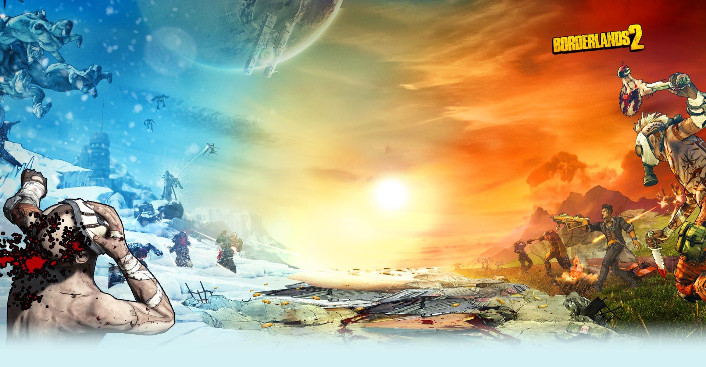

Borderlands
So, you’re ready for another story, eh? Well, every story must start at the beginning, and this story begins here, on Pandora! And, like most stories worth telling, it begins with a Vault…
Years ago, people spent their whole lives chasing the legend of the Vault, not knowing if it was anything more than a fairy tale.
That all changed one day when four Vault Hunters, guided by a mysterious guardian Angel, found a Vault Key. Or at least, a piece of one.
Borderlands 2
After the Vault’s opening, a priceless alien mineral grew all across the planet: Eridium.
The CEO of Hyperion, a corporate tyrant named Handsome Jack, soon set his greedy sights on Pandora.
Hyperion harvested Eridium as they scoured the planet for a new Vault — the Vault of The Warrior.
Just as before, the rumors of the Vault lured a band of brave fools — Vault Hunters — seeking their fortunes in the wastes of the Borderlands.
Jack, hoping to snuff out any competition in his quest for the Vault, tried to have them killed! But they survived, and joined the Crimson Raiders, freedom fighters allied against Hyperion’s oppression.
Borderlands The Pre-Sequel!
But Jack wasn't always a psychopathic CEO! It wasn't too long ago he was nothing more than a corporate code monkey. But, he wasn’t alone.
He had Angel on his side, and when he learned of a Vault on Pandora’s moon, Elpis, well, what else was there to do? He paid a group of Vault Hunters to do what they do best!
Oh, and that stupid little Claptrap robot was there, too.
Tales From The Borderlands
A telltale Games Series
It wasn’t long before Hyperion was looking for a new Vault.
Perhaps a year after the Vault of The Warrior was opened, Rhys, an enterprising Hyperion employee, tried to buy a black market Vault Key.
would have guessed, the whole deal was a con, and the key was a fake!
The deal went bust, a bandit stole the money, and Rhys found himself working with Fiona, the con-artist, to get it back.
Of course, things got a little complicated along the way when he accidentally installed an AI copy of Jack’s personality into his brain.